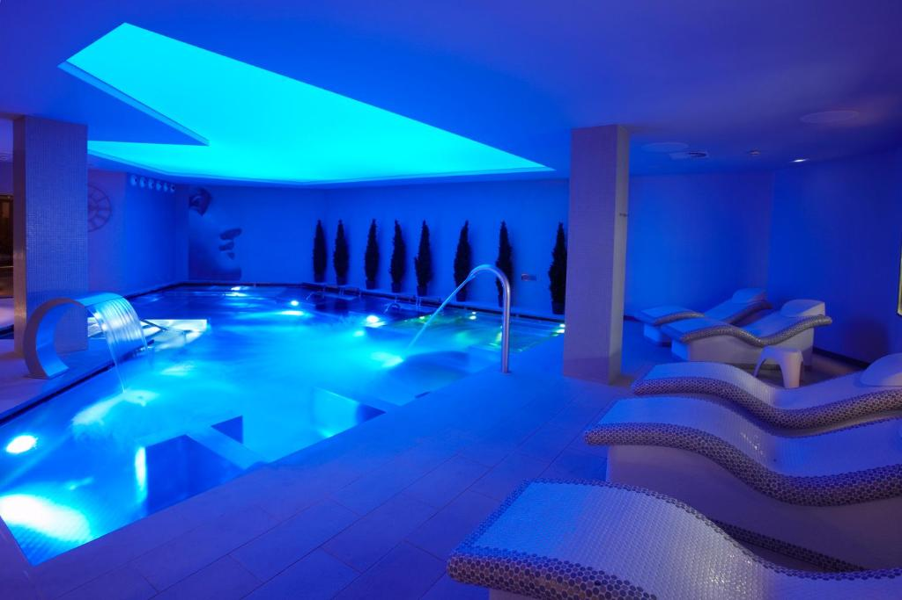
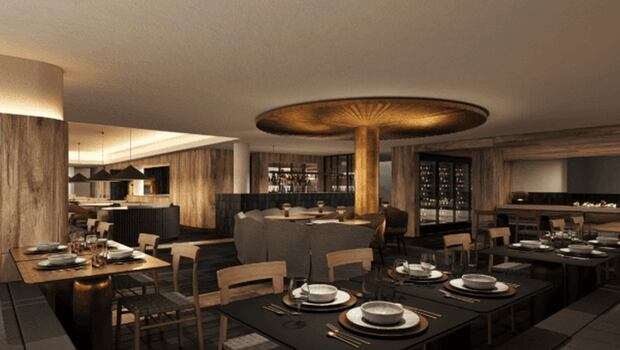

Mi viaje a francia
Mi sitio de partida sera desde el Puig Castellar, el primer lugar de visita sera Paris, despues me ire a Le Mans, a continuacion ire a lió, y por ultimo sitio de visita sera Andorra, luego volvere al Puig Castellar.
1 dia
Este es mi primer dia, lo primero de todo sera ir en coche hasta mi hotel que esta en Paris. Saldre de Barcelona a las 6:30 de la mañana, para poder llegar a Francia mas o menos a las 16:00 de la tarde.
Durante mi viaje de Barcelona a Paris tuve que parar a poner gasolina 2 veces por un precio en total de 80€.
Mi hotel de paris, tiene un coste de 75€ la noche todo incluido.
Ahora ire hacer un tour al estadio del Paris Saint-Germain que tiene un precio de 25€
Finalmente volvere a mi hotel sobre las 19:30 para poder cenar y ir a dormir
2 dias
Este es mi segundo dia, durante este dia ire de Paris a Le Mans que son 2h 30min, para eso me despertare a las 9:00 de la mañana para poder llegar llegar alli a las 12:00 mas o menos.
Este sera mi hotel de Le mans que tiene un costo de 75€ la noche todo incluido.
Una vez llegue alli me quedare en el hotel hasta la hora de comer, y despues a las 17:00 de la tarde ire a visitar el Museum of the 24 Hours of Le Mans que tiene un costo de 15€.
Una vez acabe de visitar el Museo, ire a visitar el circuito de Le Mans que es gratis.
Ahora ya me voy a mi hotel a cenar y dormir.
3 dias
Empezamos el 3r dia hoy iremos a Lió, pero primero de todo iremos a poner gasolina por un precio de 40€. Luego empezaremos cogiendo el coche a las 8:00 de la mañana para llegar alli sobre las 13:00.
Primero ire a mi hotel que es bastante bueno y asi poder comer, tiene un precio de 105€ la noche todo incluido.
Una vez ya hemos acabado de comer a las 16:00 de la tarde me ire hacer un tour al campo del Olympique Lyonnais por un precio de 30€.
Ahora ya hemos acabado de visitar el estadio y volvemos al hotel para cenar y descansar.
4 dias
Este es el 4rt dia, nos quedaremos en Lió ya que nos queda un sitio muy importante por visitar por la mañana que es Basílica Notre-Dame de Fourvière el sitio de visita cuesta 40€.
Ahora volveremos al hotel a comer.
Una vez ya hemos comido nos iremos al Teatro Galo-Romano por un precio de 10€.
Finalmente volvemos al hotel a cenar y mañana nos vamos a Andorra.
5 dias
Ahora ya estamos por el dia 5, este dia nos iremos desde Lió hasta Andorra que son 7h 15min en coche, para eso nos despertaremos a las 9:00 de la mañana para poder llegar alli a las 16:00 de la tarde.
Durante este viaje he tenido que para 1 vez por la gasolina por un precio de 40€.
Este sera mi hotel durante 2 dias que voy a estar en Andorra, tiene un precio de 150€ la noche todo incluido.
Ahora que hemos llegado y ya son las 16:30 nos iremos a dar un paseo por Andorra la Vella hasta las 19:30, para ya poder volver al hotel a cenar y dormir.
6 dias
Este es el ultio dia en Andorra y voy a ir a un sitio muy especial para comer.
Primero por la mañana nos iremos a la piscina del hotel a descansar un rato hasta las 13:00.

Ahora nos iremos al sitios especial que es ir al restaurante de Messi por un precio de 200€.

Fianlmente por la tarde nos vamos al hotel a descansar.
7 dias
Ultimo dia de mi viaje y este dia voy a volver a Barcelona.
Al final me he gastado 1100€.
ESTE HA SIDO MI VIAJE